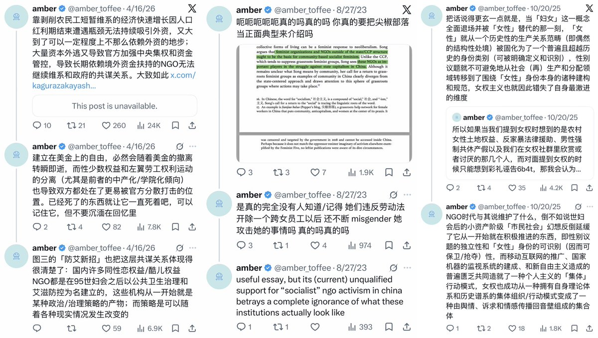
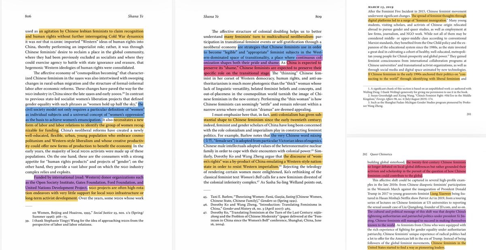
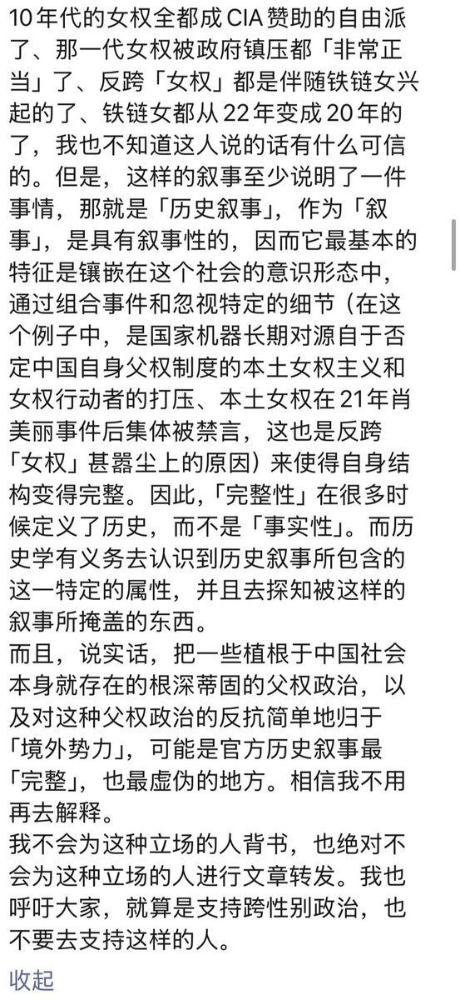

「当amber被指控与国家主义粉红共谋的那一天，她一定会回想起写作《对本次疫情的结构性反思》的那个下午。」我确实没想到这句话都能被拿来挑刺，看来这说明我那篇长文确实是写得不错，那我现在正面回应一下。
这压根不是一个明确的立场陈述，是反讽。一方面公益机构NGO在国内本身监管严重且无法获取资金的情况下从国外拿钱（包括但不限于福特基金会和开放世界基金会，两者都和CIA有密切联系，也是美国进行殖民主义的重要渠道）本就是无奈之举和世界惯例，另一方面整个NGO体制在全球范围内本身就发挥维护美国中心主义保障的新自由全球资本主义秩序、外包和私有化政府职能的物质和意识形态功能，此外部分自由派女权主义者又出于策略和躲避政治迫害的正安全考量和所谓境外势力达成联系，政府又又同时在寻找借口镇压境内NGO组织并宣传境外势力叙事以达到维稳和意识形态防控目的、同时污名化一切世妇会之后早就成为行业基础原则的、正当的资金和知识交流。在种种复杂的话题和物质影响之下，本土的部分中产自由派酷儿女权，尤其是后来流亡海外并以歪脑为运营主体（由美国国际媒体署提供资金）的女权行动派及其海外支持者于20年流亡海外，并声称这种退缩仍然是反抗和胜利的重要组成部分，并同时积极参与西方对中国女性「既是完美受害者、也是被浪漫化的反抗者」的东方主义凝视，同时这样的退守也恰好契合了中国政府对公共行动的大力镇压，也使得以极其极端的新自由主义自我关怀律令为意识形态核心、反对一切形式的结盟共同行动和线下结社的6b4t激进主义女权成功在线上获得了垄断式的声音。以上的大部分内容在我导师的Queer Chimerica一书中都有记述，我也早就在此书出版前反复就这种共谋和复杂性在别的帖子里进行过陈述，我这次真是因为只是发个推文所以懒得解释了而已。也希望某些借题发挥的人不要再把你和我的私人恩怨解读为政治分歧了，我的政治立场从来都是正确的，你用反对我立场的名义反对我本人只会让你变得越来越坏越来越蠢。
这压根不是一个明确的立场陈述，是反讽。一方面公益机构NGO在国内本身监管严重且无法获取资金的情况下从国外拿钱（包括但不限于福特基金会和开放世界基金会，两者都和CIA有密切联系，也是美国进行殖民主义的重要渠道）本就是无奈之举和世界惯例，另一方面整个NGO体制在全球范围内本身就发挥维护美国中心主义保障的新自由全球资本主义秩序、外包和私有化政府职能的物质和意识形态功能，此外部分自由派女权主义者又出于策略和躲避政治迫害的正安全考量和所谓境外势力达成联系，政府又又同时在寻找借口镇压境内NGO组织并宣传境外势力叙事以达到维稳和意识形态防控目的、同时污名化一切世妇会之后早就成为行业基础原则的、正当的资金和知识交流。在种种复杂的话题和物质影响之下，本土的部分中产自由派酷儿女权，尤其是后来流亡海外并以歪脑为运营主体（由美国国际媒体署提供资金）的女权行动派及其海外支持者于20年流亡海外，并声称这种退缩仍然是反抗和胜利的重要组成部分，并同时积极参与西方对中国女性「既是完美受害者、也是被浪漫化的反抗者」的东方主义凝视，同时这样的退守也恰好契合了中国政府对公共行动的大力镇压，也使得以极其极端的新自由主义自我关怀律令为意识形态核心、反对一切形式的结盟共同行动和线下结社的6b4t激进主义女权成功在线上获得了垄断式的声音。以上的大部分内容在我导师的Queer Chimerica一书中都有记述，我也早就在此书出版前反复就这种共谋和复杂性在别的帖子里进行过陈述，我这次真是因为只是发个推文所以懒得解释了而已。也希望某些借题发挥的人不要再把你和我的私人恩怨解读为政治分歧了，我的政治立场从来都是正确的，你用反对我立场的名义反对我本人只会让你变得越来越坏越来越蠢。


